11 Exercises
The following exercises will walk you through the process of using iSEE to explore single cell RNA-seq data. You will use data that have already been prepared and is saved in a SingleCellExperiment object. You will use the pbmc3k dataset from the TENxPBMCData package, which contains gene expression profiles for 2,700 single peripheral blood mononuclear cells. Information on how the data were preprocessed can be found here.
These exercises were adapted from iSEEWorkshopEuroBioc2020/.
To follow along with these exercises, you will need to complete the steps described in the Preparation guide for this demo.
11.1 Loading the Data
First, we’ll want to load the data that we’ll be using. To do that, we’ll need to load the AnVIL package created by the Bioconductor team for interfacing with files on AnVIL. Luckily, it’s already installed.
Next, we’ll use the avfiles_restore() function from the AnVIL package to actually bring the data into our environment’s persistent disk.
avfiles_restore(
source = "sc_bioconductor_data.RData",
namespace = "anvil-outreach",
name = "demos-single-cell-bioconductor"
)In the code above, we are copying the file sc_bioconductor_data.RData from the Workspace demos-single-cell-bioconductor. It was created under the anvil-outreach Billing Project.
11.2 Installing iSEE
Once you’ve loaded the data, you’ll want to install and load the iSEE library. You can easily install it into your own personal RStudio environment using the pre-installed BiocManager commands.
11.4 Visualize Cell Type Assignment
Next, let’s focus specifically on visualizing cell type assignment by cluster membership. The goal is to identify the predominant cell type in each cluster. We can do this by plotting the column data in a ColumnDataPlot.
First, select the panel organization button and select “Organize panels”.
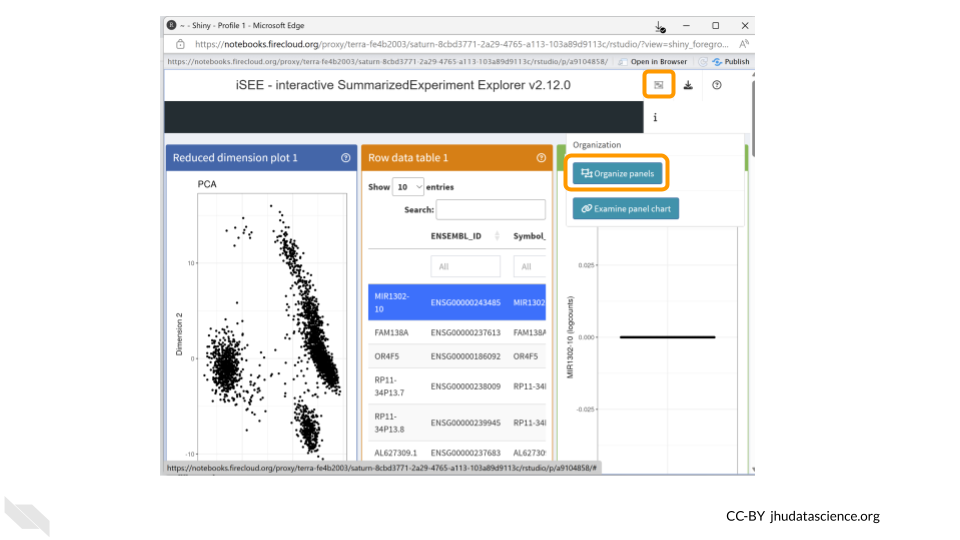
Remove all plots except for the column data plot. This will make things easier to view. Change the width to 12.
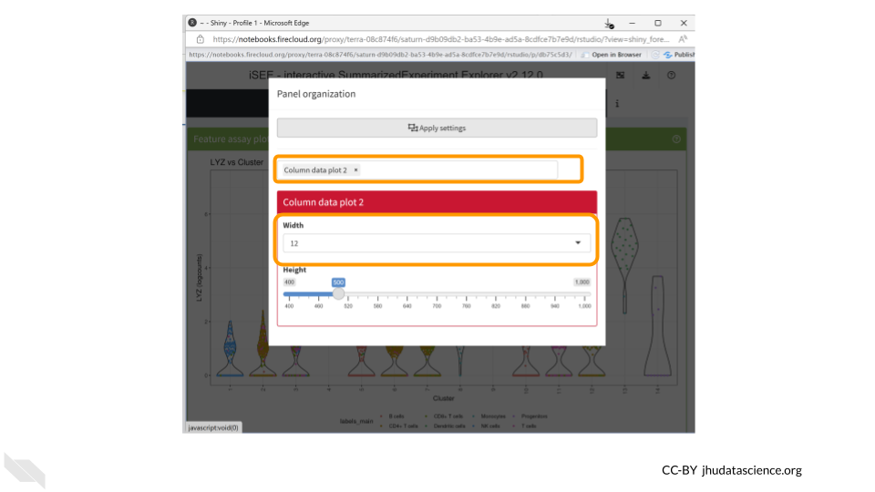
You should now see a large scatter plot. Select “Data parameters” underneath the plot.
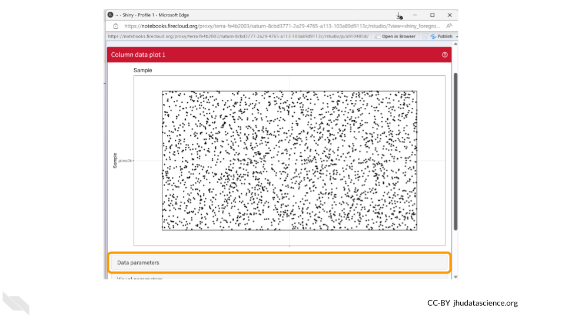
First, select “labels_fine” under “Column of interest (Y-axis)”. Directly below, select the “Column data” button for “X-axis”. Once the dropdown menu appears for “Column of interest (X-axis)”, select “Cluster”.
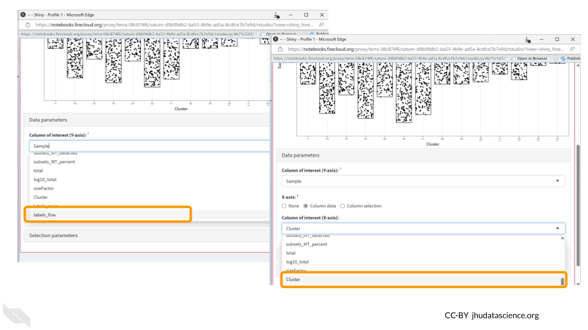
Since both cell annotations and the cluster are categorical, iSEE will generate a visual representation of a matrix called a “Hinton plot”.
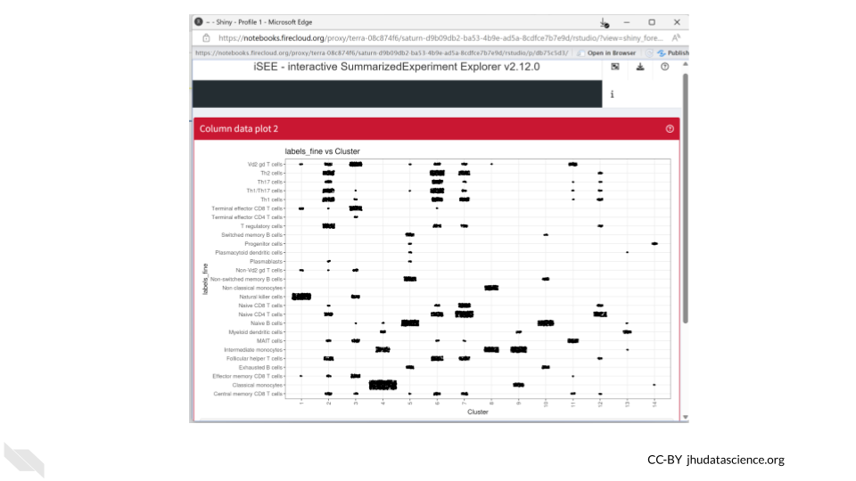
Now we know that cluster 4 contains almost all the cells that were annotated as classical monocytes. On the other hand, T cells can be found in multiple clusters.
We can also save the R code used to create our iSEE plots. This helps make our work reproducible!
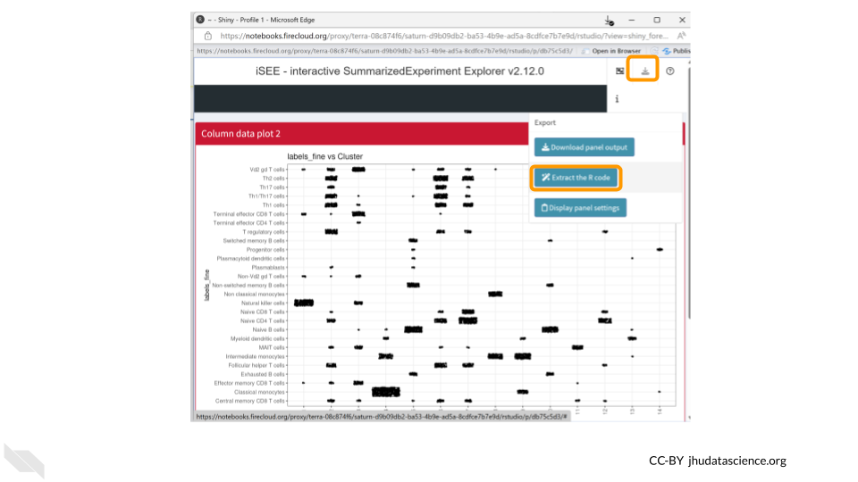
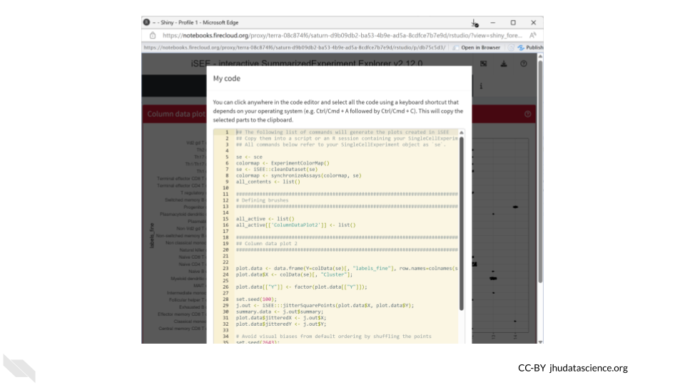
11.5 Visualize Expression of a Single Gene
Now let’s take a look at the expression data of a single gene across all the clusters. We can use the “Feature assay plot” panel to plot the distribution of the logcount values for a particular gene.
Click on the “Organize Panels” icon in the top right corner. Remove the “column plot” and choose “feature assay plot”. Change the width of the plot to 12.
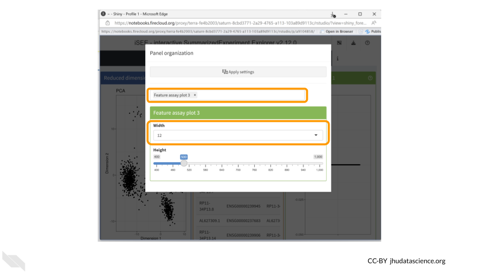
You should now see a rather underwhelming bar plot. We still need to change the data parameters, so click on the “Data parameters” box.
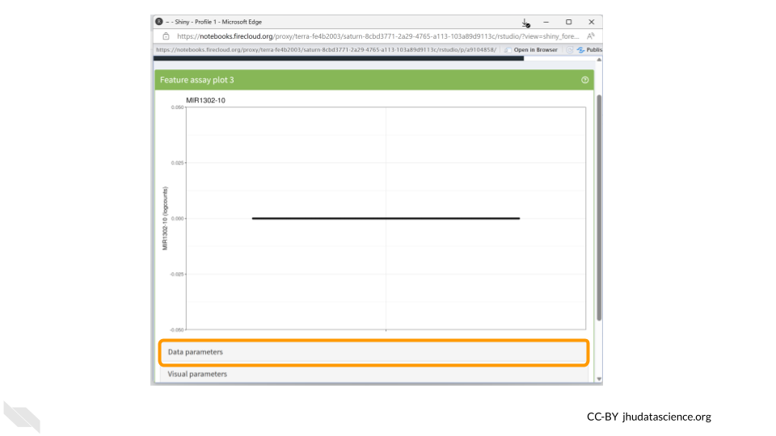
Next, change the “Y-axis feature” to “LYZ”. This is the gene whose expression we’ll be examining. Change the feature selection box to “logcounts.”
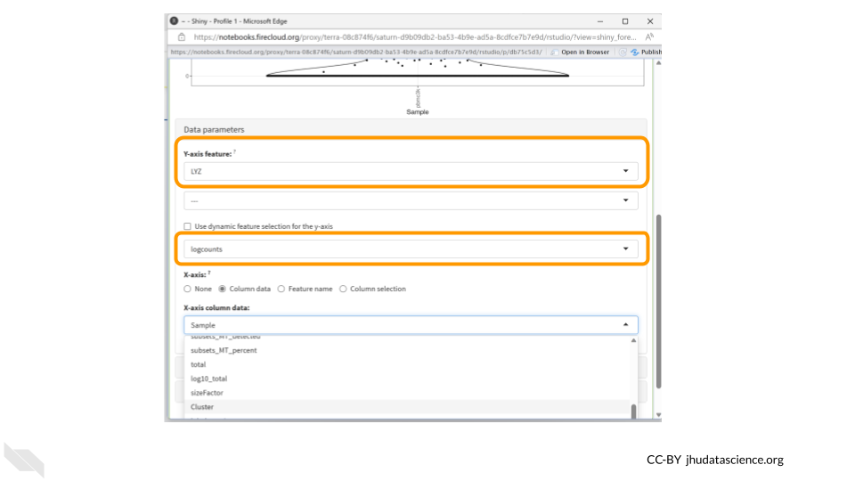
The LYZ gene encodes an enzyme called lysozyme, which plays a crucial role in the immune system’s defense against bacterial infections. The primary function of lysozyme is to break down bacterial cell walls.
The highest levels of LYZ gene expression are typically observed in tissues with direct contact with the external environment, such as the epithelial cells of the respiratory tract, gastrointestinal tract, and genitourinary system. These tissues are often exposed to potential pathogens, and the expression of lysozyme helps provide an additional line of defense against bacterial invasion.
Next, click the “column data” button under the “X-axis” header. Finally, choose “Cluster” from the drop down menu of “X-axis column data.”
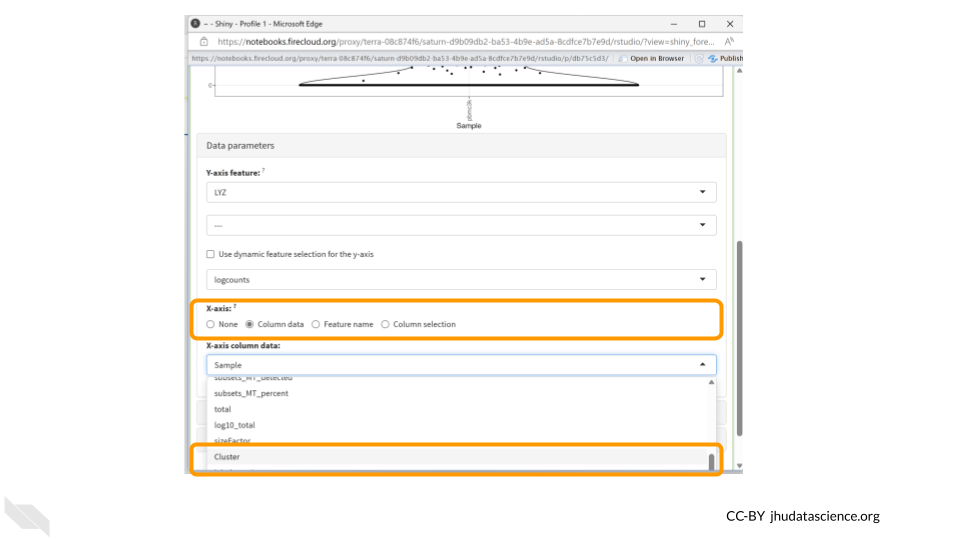
Now we have a much more exciting violin plot of LYZ gene expression levels across the 14 clusters in our dataset. LYZ is expressed more in clusters 4, 8, 9, and 13. We might be interested in also displaying cell type information in this plot, which we can do using the Visual Parameters options. Click the “Visual parameters” box.
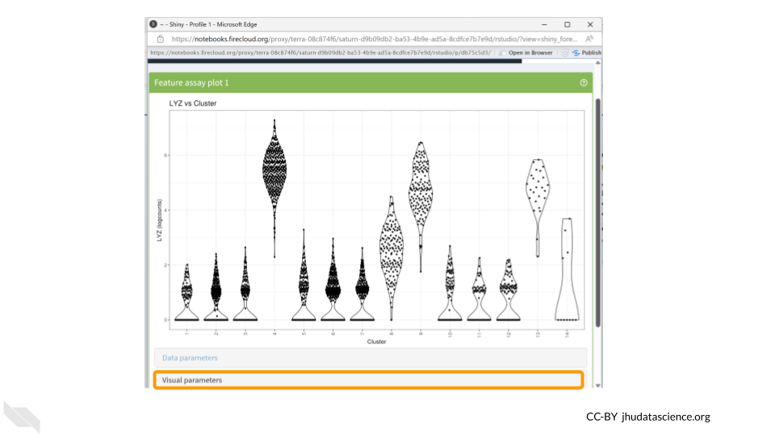
Make sure “Color” is checked in the first row. Choose “Column Data” under the “Color by” options and change the drop down menu to “labels_main”. We could also choose to color the data by “labels_fine”.
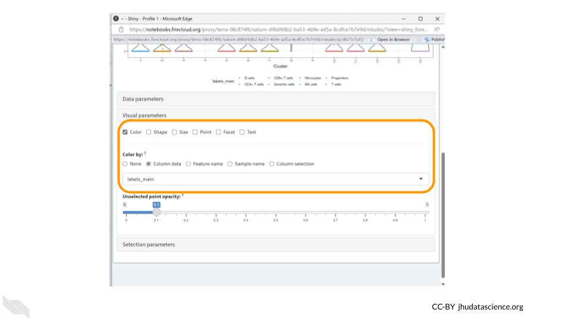
We should see the dots in our violin plot colored by cell type annotation. Three of the clusters which have higher LYZ expression contain large numbers of cells identified as monocytes. Since LYZ codes for a human lysosome protein and is often used as a marker gene for monocytes, this makes a lot of sense.
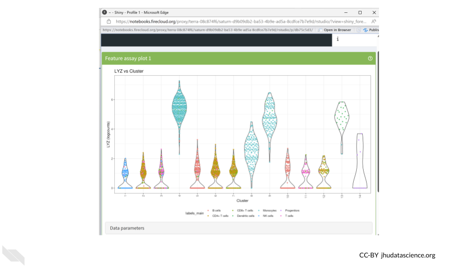
Monocytes are a subset of white blood cells that play a pivotal role in our immune defense against infections. Upon encountering an infection or inflammation, they migrate from the bloodstream to the affected tissues, where they differentiate into specialized cells that engulf and eliminate pathogens.
Let’s download this plot. Click on the “download” button in the top right corner like we did before, but this time choose “Download panel output”. A box will pop up asking you to choose which plots to download. This means you could have multiple plots being displayed in your panel but only choose to download a subset of them. Make sure “Feature assay plot” is checked and click “Download”. Your figure will be saved in a zip file in your Downloads folder.
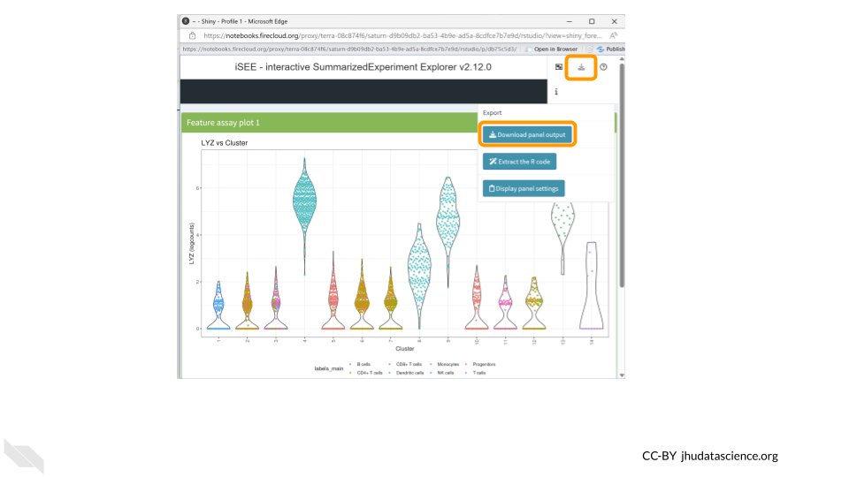
Your turn!
CD14 is a marker gene for the same type of cells as LYZ. Does it have the same cluster expression pattern as what we saw for LYZ?
11.6 Get Session Info
It’s a good idea to document information about the packages (and their versions) you used while running the analysis. The last codeblock uses the sessionInfo() command to do just that. Here’s an example of what that might look like:
## R version 4.3.2 (2023-10-31)
## Platform: x86_64-pc-linux-gnu (64-bit)
## Running under: Ubuntu 22.04.4 LTS
##
## Matrix products: default
## BLAS: /usr/lib/x86_64-linux-gnu/openblas-pthread/libblas.so.3
## LAPACK: /usr/lib/x86_64-linux-gnu/openblas-pthread/libopenblasp-r0.3.20.so; LAPACK version 3.10.0
##
## locale:
## [1] LC_CTYPE=en_US.UTF-8 LC_NUMERIC=C
## [3] LC_TIME=en_US.UTF-8 LC_COLLATE=en_US.UTF-8
## [5] LC_MONETARY=en_US.UTF-8 LC_MESSAGES=en_US.UTF-8
## [7] LC_PAPER=en_US.UTF-8 LC_NAME=C
## [9] LC_ADDRESS=C LC_TELEPHONE=C
## [11] LC_MEASUREMENT=en_US.UTF-8 LC_IDENTIFICATION=C
##
## time zone: Etc/UTC
## tzcode source: system (glibc)
##
## attached base packages:
## [1] stats graphics grDevices utils datasets methods base
##
## loaded via a namespace (and not attached):
## [1] sass_0.4.8 utf8_1.2.4 generics_0.1.3 xml2_1.3.6
## [5] stringi_1.8.3 lattice_0.21-9 hms_1.1.3 digest_0.6.34
## [9] magrittr_2.0.3 evaluate_0.23 grid_4.3.2 timechange_0.3.0
## [13] bookdown_0.41 fastmap_1.1.1 rprojroot_2.0.4 jsonlite_1.8.8
## [17] Matrix_1.6-1.1 processx_3.8.3 chromote_0.3.1 ps_1.7.6
## [21] promises_1.2.1 httr_1.4.7 fansi_1.0.6 ottrpal_1.3.0
## [25] udpipe_0.8.11 cow_0.0.0.9000 jquerylib_0.1.4 cli_3.6.2
## [29] rlang_1.1.4 gitcreds_0.1.2 cachem_1.0.8 yaml_2.3.8
## [33] tools_4.3.2 tzdb_0.4.0 dplyr_1.1.4 curl_5.2.0
## [37] vctrs_0.6.5 R6_2.5.1 lifecycle_1.0.4 lubridate_1.9.3
## [41] snakecase_0.11.1 stringr_1.5.1 janitor_2.2.0 pkgconfig_2.0.3
## [45] later_1.3.2 pillar_1.9.0 bslib_0.6.1 data.table_1.15.0
## [49] glue_1.7.0 Rcpp_1.0.12 highr_0.11 xfun_0.48
## [53] tibble_3.2.1 tidyselect_1.2.0 knitr_1.48 textrank_0.3.1
## [57] websocket_1.4.2 htmltools_0.5.7 igraph_2.0.2 rmarkdown_2.25
## [61] webshot2_0.1.1 readr_2.1.5 compiler_4.3.2 askpass_1.2.0
## [65] openssl_2.1.111.7 Shutting Down
Pausing your cloud environment only temporarily stops your work. When you are ready to delete the cloud environment, click on the RStudio icon on the right-hand side and select “Settings”. If you don’t see this icon, you may need to scroll to the right.

Click on “Delete Environment”.
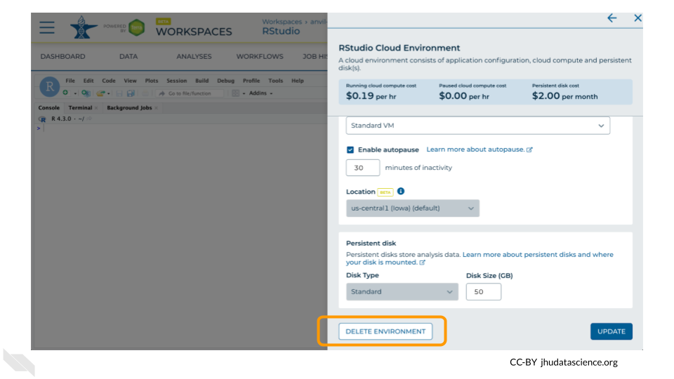
If you are certain that you do not need the data and configuration on your disk, you should select “Delete everything, including persistent disk”. If there is anything you would like to save, open the compute environment and copy the file(s) from your compute environment to another location, such as the Workspace bucket, GitHub, or your local machine, depending on your needs.

Select “DELETE”.

You can also delete your cloud environment(s) and disk storage at https://anvil.terra.bio/#clusters.